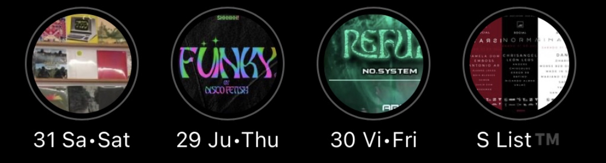

<section class="section section-lg pt-0 @@classes">
    <div class="container">
        <div class="row align-items-center justify-content-around">
            <div class="col-md-6 col-xl-7 text-center text-md-left">
                <h2 class="h1 mb-4">How does this tourist do it?</h2>
                <p class="lead">I follow whichever IG accounts I know and then every single DJ that they tag in their stories and recent posts. And then I just repeat for every DJ I can.
                    As I see event posts on my feed I share them as a story and later highlight them to sort them by date. As the weekend approaches I usually have a decent roster of events to choose from.
                </p>
                <p class="lead">People also send me events to share.</p>
                
            </div>
            <div class="col-md-6 col-xl-4 mb-5">
                <div class="card bg-primary shadow-soft border-light organic-radius1 p-3">
                    
                </div>
            </div>
        </div>
    </div>
</section>